<!doctype html>
<html lang="ru">
<head>
<meta charset="utf-8">
<meta name="viewport" content="width=device-width, initial-scale=1, viewport-fit=cover">
<title>Фестивали, конкурсы, концерты · Cello Журнал</title>
<meta name="claude:viewport-fit-sides" content="cover">
<meta name="description" content="Конкурсы, фестивали и концерты осени 2026 года">
<link rel="preconnect" href="https://fonts.googleapis.com"><link rel="preconnect" href="https://fonts.gstatic.com" crossorigin><link rel="stylesheet" href="https://fonts.googleapis.com/css2?family=Prata&family=Golos+Text:wght@400;500;600&display=swap">
<link rel="stylesheet" href="style.css">
</head>
<body>
<header class="strip"><div class="wrap"><a class="brand" href="index.html"><span>Cello</span> Журнал</a><nav class="topnav"><a href="index.html#contents">Содержание</a><span class="label">Выпуск первый · осень 2026</span></nav></div></header><nav class="pagenav pagenav-top" aria-label="Навигация по страницам"><div class="wrap"><a class="pn-prev" href="rossinsky.html#p45" aria-label="Предыдущий раздел, страница 45">← с. 45</a><form class="pn-go" data-pagenav><label for="pn-top">Страница</label><input id="pn-top" type="text" inputmode="numeric" pattern="[0-9]*" maxlength="2" placeholder="1–56" autocomplete="off"><button type="submit">OK</button><span class="pn-msg" role="status"></span></form><a class="pn-next" href="bogdan-efremov.html#p50" aria-label="Следующий раздел, страница 50">с. 50 →</a></div></nav><main class="article essay"><div class="wrap"><header class="a-head"><p class="label rubric">CELLO Анонсы · с. 46–49</p><h1>Фестивали, конкурсы, концерты</h1><p class="dek">Конкурсы, фестивали и концерты осени 2026 года</p></header><div class="a-body"><h2>Конкурсы и фестивали</h2><div class="events"><article class="event">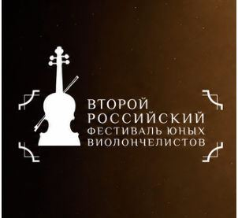<div class="ev-body"><p class="ev-date">17—26 ноября <span>2026 г.</span></p><p class="ev-venue">Санкт-Петербург</p><p class="ev-what">Второй российский фестиваль юных виолончелистов</p></div></article><article class="event">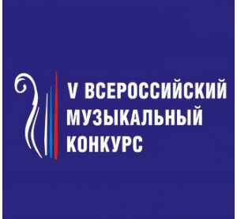<div class="ev-body"><p class="ev-date">11—19 ноября <span>2026 г.</span></p><p class="ev-venue">Санкт-Петербург</p><p class="ev-what">V Всероссийский музыкальный конкурс</p></div></article><article class="event"><div class="ev-body"><p class="ev-date">30 ноября — 7 декабря <span>2026 г.</span></p><p class="ev-venue">Москва</p><p class="ev-what">XXVII Международный телевизионный конкурс юных музыкантов «Щелкунчик»</p></div></article><article class="event"><div class="ev-body"><p class="ev-date">9 ,10, 18 ноября <span>2026 г.</span></p><p class="ev-what">Москва XVIII Международный фестиваль Vivacello</p></div></article></div>
<h2>Концерты</h2><div class="events"><article class="event">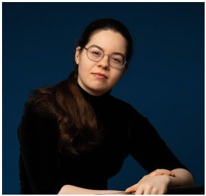<div class="ev-body"><p class="ev-date">4 октября <span>2026 г.</span></p><p class="ev-venue">Большой зал 20:00</p><p class="ev-what">Дворжак. Концерт для виолончели с оркестром Абонемент 12 «Рыцарь виолончели » К 100-летию со дня рождения Мстислава Ростроповича Мария Зайцева, виолончель Академический симфонический оркестр филармонии, Дмитрий Юровский, дирижёр</p></div></article><article class="event">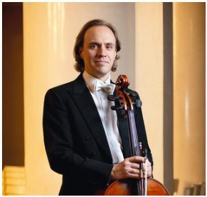<div class="ev-body"><p class="ev-date">8 октября <span>2026 г.</span></p><p class="ev-venue">Малый зал 19:00</p><p class="ev-what">Миниатюры для виолончели и фортепиано Дмитрий Хрычёв, виолончель, Олег Вайнштейн, фортепиано</p></div></article><article class="event">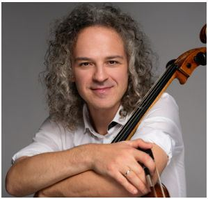<div class="ev-body"><p class="ev-date">1 ноября <span>2026 г.</span></p><p class="ev-venue">Малый зал 19:00</p><p class="ev-what">Вечер музыки для виолончели и фортепиано Микаэл Самсонов (Беларусь), виолончель Инга Дзекцер, фортепиано</p></div></article><article class="event">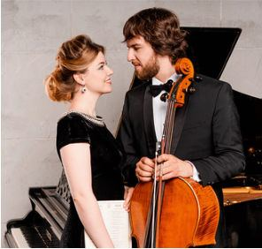<div class="ev-body"><p class="ev-date">15 декабря <span>2026 г.</span></p><p class="ev-venue">Малый зал 19:00</p><p class="ev-what">Александр Рамм, виолончель Анна Одинцова, фортепиано</p></div></article><article class="event">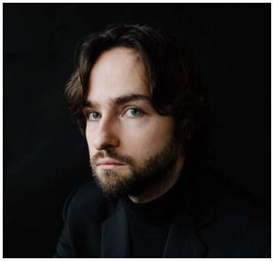<div class="ev-body"><p class="ev-date">8 октября <span>2026 г.</span></p><p class="ev-venue">Камерный зал 19:00</p><p class="ev-what">Celloвеческий голос Мария Зайцева, виолончель, Арсений Тарасевич-Николаев, фортепиано</p></div></article><article class="event">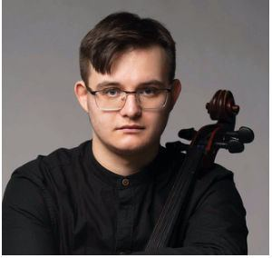<div class="ev-body"><p class="ev-date">26 октября <span>2026 г.</span></p><p class="ev-venue">Концертный зал им. П.И.Чайковского 19:00</p><p class="ev-what">Молодые таланты Данила Владыко, виолончель, Филипп Руденко, фортепиано, Арсен Ивлев, скрипка, Фёдор Орлов, фортепиано Государственный академический симфонический оркестр России имени Е. Ф. Светланова, Вячеслав Валеев, дирижёр</p></div></article><article class="event">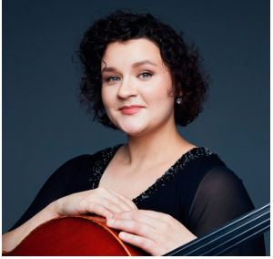<div class="ev-body"><p class="ev-date">1 ноября <span>2026 г.</span></p><p class="ev-venue">Малый зал 19:00</p><p class="ev-what">Леонид Железный, скрипка, Лидия Аристова, виолончель, Станислав Корчагин, фортепиано</p></div></article><article class="event">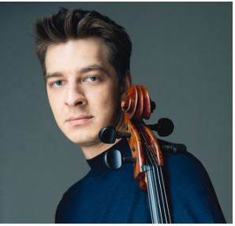<div class="ev-body"><p class="ev-date">8 ноября <span>2026 г.</span></p><p class="ev-venue">Малый зал 19:00</p><p class="ev-what">Иван Сендецкий, виолончель Олеся Морозова, фортепиано Иван Сендецкий, виолончель</p></div></article><article class="event">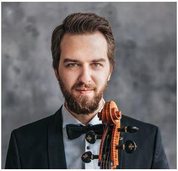<div class="ev-body"><p class="ev-date">5 ноября <span>2026 г.</span></p><p class="ev-venue">Большой зал 20:00</p><p class="ev-what">П.И. Чайковский. Вариации на тему Рококо Александр Рамм, виолончель, Пётр Худоногов, флейта, Елизавета Ключерёва, фортепиано, Игорь Манашеров, дирижёр Академический симфонический оркестр филармонии</p></div></article><article class="event">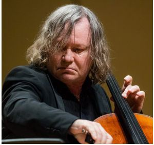<div class="ev-body"><p class="ev-date">8 ноября <span>2026 г.</span></p><p class="ev-venue">Концертный зал им. П.И.Чайковского 19:00</p><p class="ev-what">Елена Таросян, скрипка, Александр Князев, виолончель. Государственный симфонический оркестр Челябинской области, Алексей Рубин, дирижёр</p></div></article><article class="event">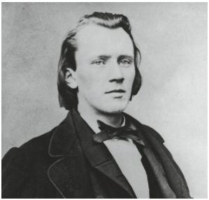<div class="ev-body"><p class="ev-date">6 ноября <span>2026 г.</span></p><p class="ev-venue">Малый зал консерватории 19:00</p><p class="ev-what">Абонемент № 9. «Любите ли вы Брамса?» Александр Князев, виолончель, орган, фортепиано</p></div></article><article class="event">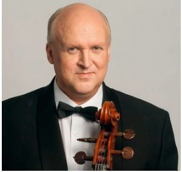<div class="ev-body"><p class="ev-date">13 октября <span>2026 г.</span></p><p class="ev-venue">Рахманиновский зал консерватории 19:00</p><p class="ev-what">«Из русского музыкального наследия Александр Загоринский, виолончель, Марина Евсеева, фортепиано, Илона Ананьина, сопрано, Мария Лазарева, скрипка</p></div></article><article class="event">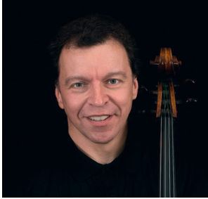<div class="ev-body"><p class="ev-date">16 октября <span>2026 г.</span></p><p class="ev-venue">Малый зал консерватории 19:00</p><p class="ev-what">Абонемент № 18. Виолончельное искусство Сергей Словачевский, виолончель Александр Кашпурин, фортепиано</p></div></article><article class="event">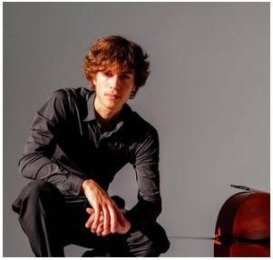<div class="ev-body"><p class="ev-date">14 декабря <span>2026 г.</span></p><p class="ev-venue">Концертный зал им. П.И. Чайковского 19:00</p><p class="ev-what">Молодые таланты Тихон Евланов, виолончель, Даниил Харитонов, фортепиано, Инна Якушева, скрипка, Дмитрий Феденко, фортепиано Московский государственный академический симфонический оркестр, Ярослав Забояркин,</p></div></article><article class="event">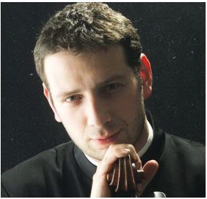<div class="ev-body"><p class="ev-date">1 декабря <span>2026 г.</span></p><p class="ev-venue">Малый зал консерватории 19:00</p><p class="ev-what">Абонемент № 18. Виолончельное искусство Борис Андрианов, виолончель</p></div></article><article class="event">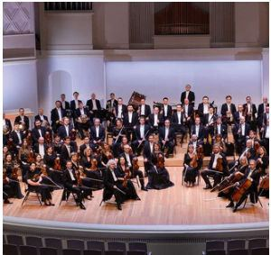<div class="ev-body"><p class="ev-date">19 ноября <span>2026 г.</span></p><p class="ev-venue">Концертный зал им. П.И.Чайковского 19:00</p><p class="ev-what">Звезды XXI века Мария Зайцева, виолончель, Сергей Давыдченко, фортепиано, Станислав Корчагин, фортепиано, Государственный академический симфонический оркестр России им. Е. Ф. Светланова, Артём Абашев, дирижёр</p></div></article><article class="event">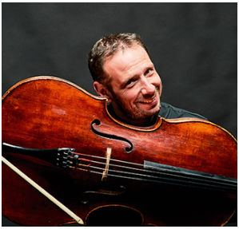<div class="ev-body"><p class="ev-date">20 ноября <span>2026 г.</span></p><p class="ev-venue">Камерный зал 19:00</p><p class="ev-what">Звезды XXI века Квартет им. В. А. Берлинского Борис Андрианов, виолончель</p></div></article><article class="event"><div class="ev-body"><p class="ev-date">15 ноября <span>2026 г.</span></p><p class="ev-venue">Большой зал 19:00</p><p class="ev-what">DSCH. К 120-летию со дня рождения Дмитрия Шостаковича Александр Князев, виолончель. Московский государственный симфонический оркестр, Иван Рудин, дирижёр</p></div></article><article class="event">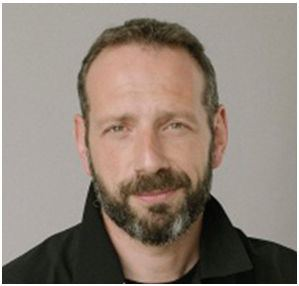<div class="ev-body"><p class="ev-date">3 октября <span>2026 г.</span></p><p class="ev-venue">Большой зал 18:00</p><p class="ev-what">Карельская государственная филармония Борис Андрианов, виолончель, Стефания Поспехина, скрипка, Анна Кошкина, виолончель www: kgfptz.ru</p></div></article><article class="event">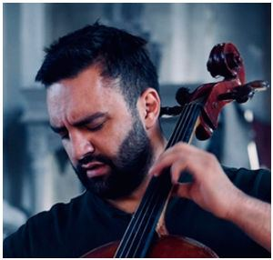<div class="ev-body"><p class="ev-date">1 ноября 2026 г. <span></span></p><p class="ev-venue">Концертный зал 18:30</p><p class="ev-what">Самарская государственная филармония Вадим Репин, скрипка, Севак Аванесян, виолончель (Армения-Бельгия) Денис Власенко, дирижёр www: filarm.ru</p></div></article><article class="event">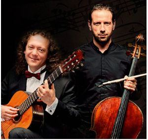<div class="ev-body"><p class="ev-date">12 ноября <span>2026 г.</span></p><p class="ev-venue">Большой зал 19:00</p><p class="ev-what">Свердловская государственная филармония Борис Андрианов, виолончель, Дмитрий Илларионов, гитара www: sgaf.ru</p></div></article><article class="event">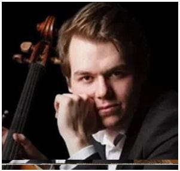<div class="ev-body"><p class="ev-date">30, 31 октября 2026 г. <span></span></p><p class="ev-venue">19:00</p><p class="ev-what">Воронежская филармония Василий Степанов, виолончель, Воронежский академический симфонический оркестр Игорь Вербицкий, дирижёр www: vrnmusic.ru</p></div></article><article class="event">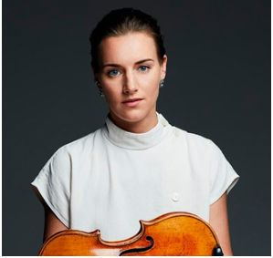<div class="ev-body"><p class="ev-date">6 ноября <span>2026 г.</span></p><p class="ev-venue">Большой зал 19:00</p><p class="ev-what">Ольга Волкова, скрипка, Александр Рамм, виолончель РНО дирижёр Фёдор Безносиков</p></div></article><article class="event">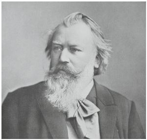<div class="ev-body"><p class="ev-date">18 декабря <span>2026 г.</span></p><p class="ev-venue">Малый зал консерватории 19:00</p><p class="ev-what">Абонемент № 9. «Любите ли вы Брамса?» Александр Князев, виолончель, орган, фортепиано </p></div></article><article class="event">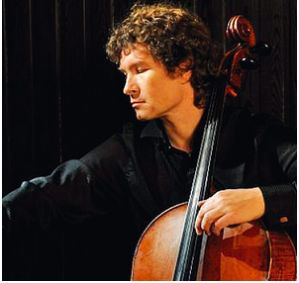<div class="ev-body"><p class="ev-date">23 января <span>2027 г.</span></p><p class="ev-venue">Малый зал консерватории 19:00</p><p class="ev-what">Абонемент № 18. Виолончельное искусство Кирилл Родин, виолончель</p></div></article></div>
<h2>Ноты</h2><p>Представляем новую серию нотных изданий «Из архива А. П. Никитина». Первый выпуск - сборник пьес различной степени сложности, в который вошли уникальные аранжировки самых популярных произведений из репертуара этого прославленного коллектива. В том числе легендарная «Песня без слов» В. Азарашвили, которая стала своего рода «визитной карточкой» ансамбля. Следите за информацией на сайте www.cello.ru</p></div><nav class="pager"><a class="prev" href="rossinsky.html"><span class="label">Назад</span>Александр Россинский. Жизнь, посвящённая музыке</a><a class="next" href="bogdan-efremov.html"><span class="label">Дальше</span>Богдан Ефремов</a></nav></div></main><nav class="pagenav pagenav-bottom" aria-label="Навигация по страницам"><div class="wrap"><a class="pn-prev" href="rossinsky.html#p45" aria-label="Предыдущий раздел, страница 45">← с. 45</a><form class="pn-go" data-pagenav><label for="pn-bottom">Страница</label><input id="pn-bottom" type="text" inputmode="numeric" pattern="[0-9]*" maxlength="2" placeholder="1–56" autocomplete="off"><button type="submit">OK</button><span class="pn-msg" role="status"></span></form><a class="pn-next" href="bogdan-efremov.html#p50" aria-label="Следующий раздел, страница 50">с. 50 →</a></div></nav><script>(function(){var M={"1": "index.html", "2": "index.html#board", "3": "privetstvie.html#p3", "4": "index.html#contents", "5": "privetstvie.html#p5", "6": "novosti.html#p6", "7": "novosti.html#p7", "8": "mariya-zaytseva.html#p8", "9": "mariya-zaytseva.html#p9", "10": "mariya-zaytseva.html#p10", "11": "mariya-zaytseva.html#p11", "12": "mariya-zaytseva.html#p12", "13": "mariya-zaytseva.html#p13", "14": "istoriya.html#p14", "15": "istoriya.html#p15", "16": "istoriya.html#p16", "17": "istoriya.html#p17", "18": "nikitin.html#p18", "19": "nikitin.html#p19", "20": "nikitin.html#p20", "21": "nikitin.html#p21", "22": "nikitin.html#p22", "23": "konkurs-korolevy-elizavety.html#p23", "24": "konkurs-korolevy-elizavety.html#p24", "25": "konkurs-korolevy-elizavety.html#p25", "26": "uprazhneniya-kazalsa.html#p26", "27": "prokofiev-skertso.html#p27", "28": "prokofiev-skertso.html#p28", "29": "prokofiev-skertso.html#p29", "30": "prokofiev-skertso.html#p30", "31": "prokofiev-skertso.html#p31", "32": "krossvord.html#p32", "33": "sovety-mastera.html#p33", "34": "sovety-mastera.html#p34", "35": "sovety-mastera.html#p35", "36": "sovety-mastera.html#p36", "37": "mariya-zhuravleva.html#p37", "38": "mariya-zhuravleva.html#p38", "39": "istoricheski-informirovannoe.html#p39", "40": "istoricheski-informirovannoe.html#p40", "41": "istoricheski-informirovannoe.html#p41", "42": "istoricheski-informirovannoe.html#p42", "43": "rossinsky.html#p43", "44": "rossinsky.html#p44", "45": "rossinsky.html#p45", "46": "anonsy.html", "47": "anonsy.html", "48": "anonsy.html", "49": "anonsy.html", "50": "bogdan-efremov.html#p50", "51": "bogdan-efremov.html#p51", "52": "pyatigorsky.html#p52", "53": "pyatigorsky.html#p53", "54": "pyatigorsky.html#p54", "55": "index.html#concert", "56": "index.html#chronicle"};document.querySelectorAll("form[data-pagenav]").forEach(function(f){f.addEventListener("submit",function(e){e.preventDefault();var i=f.querySelector("input"),m=f.querySelector(".pn-msg"),n=parseInt(i.value,10);if(M[n]){m.textContent="";var u=M[n],h=u.split("#");if(h[0]===location.pathname.split("/").pop()&&h[1]){var t=document.getElementById(h[1]);if(t){t.scrollIntoView();i.blur();return;}}location.href=u;}else{m.textContent="Страницы 1–56";i.select();}});});})();</script>
</body>
</html>
